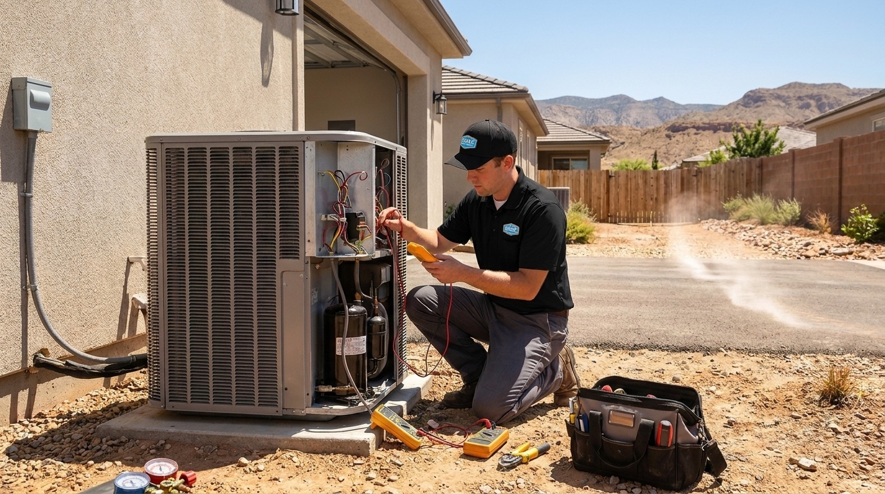
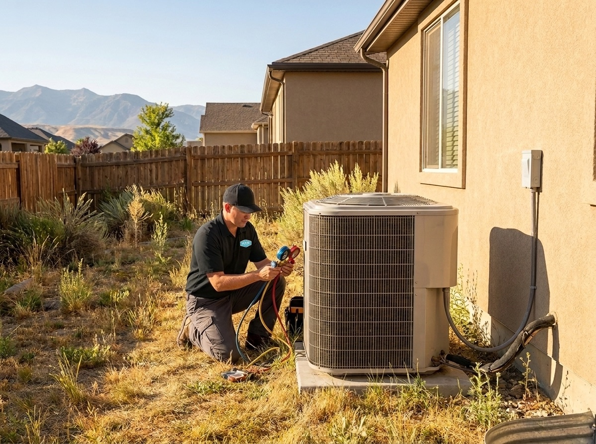

385.853.8116


Sunny Home Services’ AC repair on the Wasatch Front restores cooling fast when your system fails in Utah’s summer heat. Along the Wasatch Front, AC systems don’t get a break: long run times, dry air, and fine dust mean even small issues escalate quickly.
When your system stops cooling properly, delays lead to bigger problems. Whether you're near Jordan Landing, Daybreak, or neighborhoods along Mountain View Corridor, fast, professional local AC repair keeps your home comfortable, and prevents further system damage.

Sunny Home Services’ technicians are trained, certified, and experienced in diagnosing and repairing systems under real Wasatch Front conditions where AC systems operate in a uniquely demanding environment.
On the Wasatch Front, that translates into a few very specific stress factors:
Because we provide air conditioner repair services in these conditions every day, we understand how Utah homes are built, how systems are sized, and how climate impacts performance.
If you’re searching “repair air conditioner near me”, with Sunny Home Services you’re getting a local team that doesn’t just repair symptoms: we identify how Utah’s climate is affecting your system, and fix the root cause. That means fewer repeat breakdowns, more consistent cooling, and repairs that actually hold up through the rest of the summer.
Air conditioning unit repair on the Wasatch Front often comes down to a few recurring issues driven by both climate and usage patterns.
Utah’s dry air and dust-heavy environment create conditions that accelerate wear on key components. Other local factors also play a role: hard water affects evaporative systems, rapid population growth drives construction dust, and higher UV exposure at elevation degrades outdoor components faster over time.
Sunny Home Services’ technicians are frequently called-out to address:
On the Wasatch Front specifically, we see performance issues tied to both newer and older homes:
Across the Salt Lake Valley, dust buildup is one of the biggest contributors to system inefficiency. Even a thin layer on coils can reduce cooling performance by to 10-20%, forcing systems to run longer and harder.

Knowing whether to schedule AC repair on the Wasatch Front, or replace your system entirely, comes down to performance, age, and how your system is holding up under Utah’s climate.
On the Wasatch Front homes, systems that run for long stretches during July and August heatwaves tend to wear down faster overall, while systems that short-cycle frequently often experience repeated part failures. If you’re facing both constant runtime and repeated repairs, it’s usually a strong signal that replacement will be more cost-effective than continuing to patch the system.
Choosing among AC repair companies means finding a team that delivers both speed and reliability. Sunny Home Services provides the responsiveness of a large company with the personal touch and accountability of a local business.
We deliver:
On the Wasatch Front, where summer temperatures climb fast and stay high, response time matters. Systems left unrepaired during peak heat experience additional strain and component failure.
Unlike many air conditioning repair companies, we prioritize communication. You know who’s coming, when they’ll arrive, and exactly what work’s being done, no surprises.
Calling Sunny Home Services for local air conditioning repair means same day response with clear communication and fast action from the first interaction.
Here’s what happens:
Most air conditioner repair service calls are completed in a single visit because our trucks are fully stocked to handle common repairs on the spot, minimizing downtime during peak cooling season.

The offers from our door hanger, redeemable when you book. Mention them when you call.

If your AC isn’t keeping up, don’t wait for a full breakdown when the next heatwave rolls around. Call now or book online to get your system back to reliable, efficient cooling, fast!